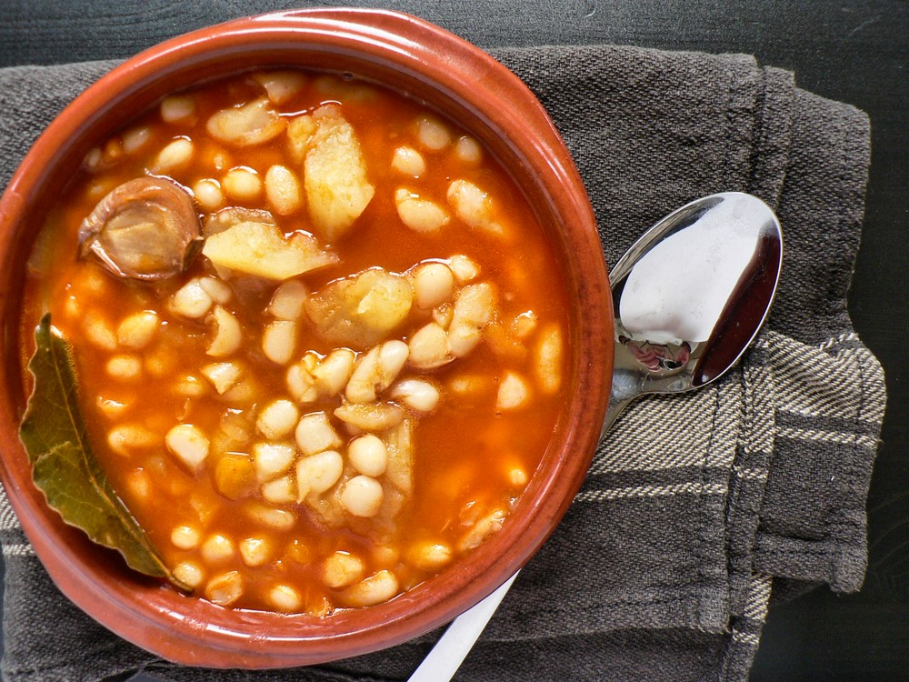
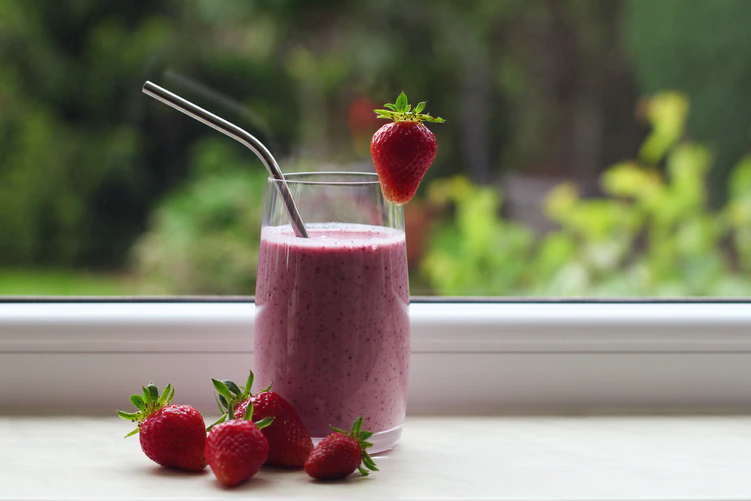
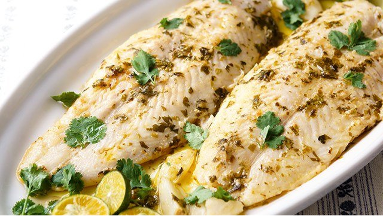
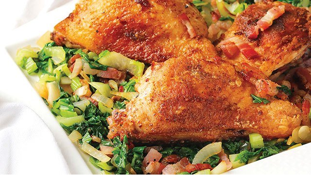

Food
Aside from all the other adjustments you're making during the pandemic, figuring out what's for lunch or dinner is a daily challenge that can add to your stress. Take note of the five easy, healthy, and economical dish ideas above, and serve your family good food that provides the nutrition they need, reducing their risk of getting sick.

Fabada
(Spanish pork and beans)
Fabada is a typical home-cooked Spanish dish consisting of pork and beans, chorizo, and morcilla (Spanish blood sausage).
When recreating it at home, you can replace morcilla with ham—a more accessible and affordable local option. Its main ingredient is canned goods, which makes Fabada a budget-friendly dish overall. Fabada is an excellent choiceif you're looking for something completely new but still tastes familiar and within your budget.

Fruit Smoothie
If you're on the hunt for something that can cool you off and, at the same time, bring many benefits to your body, grab some fruits and make a healthy fruit smoothie.
You can ask your kids for help in peeling bananas or other fruits, and when it's time to work the blender (a whole lot of fun for the kids!).You can also make a green smoothie using spinach, banana, and a combination of mixed frozen fruit to get started. Talk about a healthy and delicious snack or breakfast in one glass! Plus, you can take advantage of fruits that are on sale since it's a flexible recipe.

Calamansi Fish Fillet
If you're looking for something quick, easy, healthy, and new, try this fish recipe that turns cream dory into a tangy and flavorful dish. Apart from the cream dory, you'll need cilantro and calamansi for the mixture.
If you have been practicing your green thumb and have calamansi growing in your garden, that's one less ingredient to buy.This dish requires minimal effort, but the outcome is undoubtedly restaurant-quality. If you're looking for low-fat food that will satisfy your family's appetite, consider making this one. You can serve it with rice or steamed vegetables. Whichever one you choose, it's an easy and affordable dish to serve for the whole family.

Pan-fried Chicken Thighs with Pechay
Pan-fried chicken is arguably a favorite by both kids and the kids at heart. If the whole family is craving some juicy fried chicken with that oh-so-crunchy skin, take it up by pairing it with your local pechay. Add in some chopped bacon to the mix, and it should finally convince your picky kid to eat veggies!
You can pan-fry the chicken first. Then, cook the chopped bacon and follow it up with pechay. Make sure to season them with ground black pepper to taste. This nutritious meat-and-veggie dish can be served for lunch or dinner. With this, you can have a well-balanced meal on a budget.

Healthy Chicken Burger
Are you missing your occasional burger drive-thrus or take-outs? Satisfy your burger cravings at home and prepare a healthier one with a patty that's a bit unconventional but can still be a hit with the whole family—use chicken, red mungo, squash, and carrots. Who knew something so nutritious could be this good? You can find this healthy burger's ingredients in your local supermarkets.
Don't forget to buy cheese singles for that gooey goodness! You can prepare the dish with your kids and have them assemble their own burgers. If you have kids who aren't huge fans of the main ingredients, see how they'll react when they take a bite of it!
© 2021 PANDEMIC 101. ALL RIGHTS RESERVED.